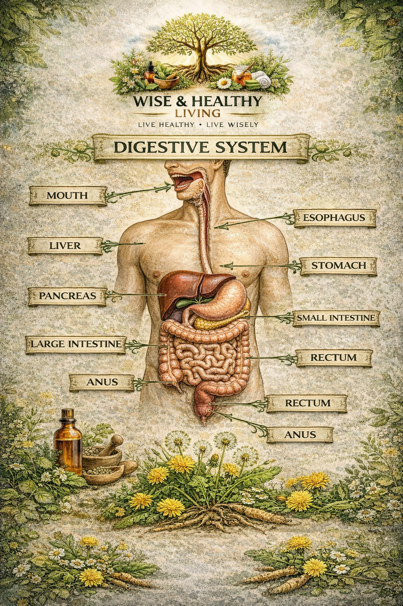

Have you ever taken a high-quality herbal supplement but felt absolutely no difference? The problem might not be the herb itself, but its bioavailability. In the world of natural health, bioavailability refers to the proportion of a nutrient that enters your circulation and is able to have an active effect. If your body can't absorb it, even the most expensive herb is simply "expensive waste."
The Barrier of the Digestive System
Our bodies are designed to be selective. The liver and digestive enzymes act as a filter, often breaking down complex plant compounds before they ever reach our bloodstream. For example, Curcumin (the active compound in Turmeric) is notoriously difficult for the human body to process on its own.
"It is not just what you eat, but what you digest and assimilate that creates health." — Traditional Naturopathic Proverb
How to "Unlock" Your Herbs
Science has shown us that certain combinations act as "keys" to unlock botanical benefits:
- Pairing with Fats: Herbs like Milk Thistle and Turmeric are fat-soluble. Taking them with a healthy fat, like avocado or coconut oil, significantly increases absorption.
- The "Black Pepper" Effect: Piperine (found in black pepper) can increase Turmeric absorption by up to 2,000% by inhibiting the metabolic pathway that eliminates it.
- Timing Matters: Some adaptogens, like Ashwagandha, are best taken on a consistent schedule to allow systemic levels to stabilize.